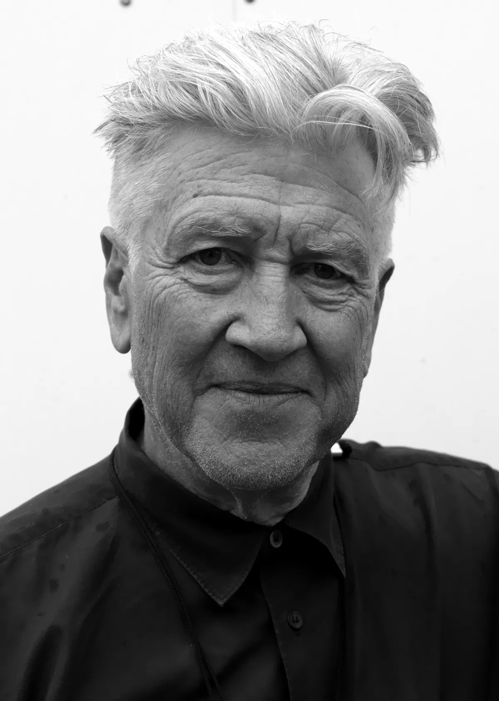
David Lynch’s world, in 441 objects
His estate’s 441 lots sold at Julien’s Auctions in June 2025 for $4,245,930. Bid on six of them, then see what the room paid.
BeginChapter 1 of 6
Wrote

Lynch began Ronnie Rocket after Eraserhead, and it was never made. Backers came and went, and he set it aside to direct The Elephant Man. However, he did not let it go: in 2014 he said that he had never found “the big idea” for it.
The lot
“Ronnie Rocket” screenplays
Eleven scripts for a film that does not exist. Two are undated, and the rest are dated 1988, 1991 and 2012, a span of 24 years. One is annotated and dated 22 February 1991 in blue ink.
What it showed
Eleven lots took nearly a fifth of the money
The “Ronnie Rocket” scripts sold level with the “Lost Highway” script, at the highest price in the sale. These 11 lots of scripts and papers are fewer than 3% of the sale by count, yet they took 19% of the money ($792,025).
See the 11 lotsSources
Julien’s Auctions, lot 15. Wikipedia, Ronnie Rocket, citing Rodley and Lynch (2005) and The Daily Beast (2014).
Many of those ideas are said to have started over coffee.
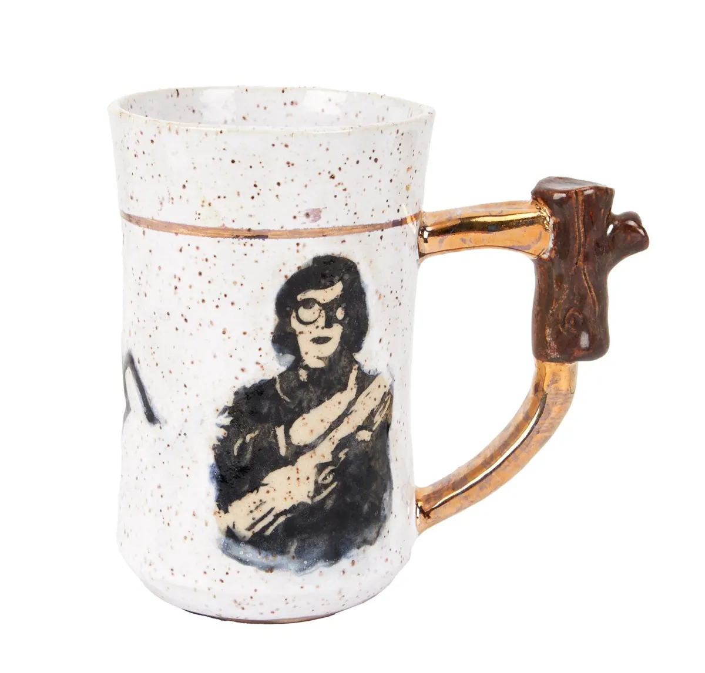
Coffee, first cup
For seven years in the 1980s, Lynch is reported to have had lunch at Bob’s Big Boy every day: a chocolate milkshake, sweet coffee, and ideas written on the napkins.
Sources
Bob’s Big Boy. A 1999 Los Angeles Times article, as reprinted here.
The writing was the plan. Then came the camera.
Chapter 2 of 6
Filmed
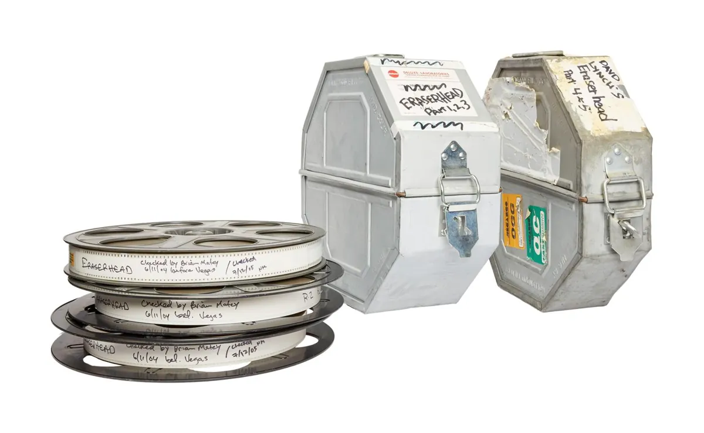
Eraserhead was filmed on and off over five years in the early 1970s, with the assistance of the American Film Institute. The sale held his own print of it, along with 41 lots of cameras and film gear.
The lot
Personal 35mm print of “Eraserhead”
Five reels in two cases, with date codes from 1996. This print was screened at the CineVegas Film Festival in 2004, when Lynch received its Vanguard Director Award. The handwriting on the cases reads “Davd Lynch’s Eraserhead”.
What it showed
The typical lot here made 21 times its estimate
The 41 lots of cameras and film gear made $405,600. With the film memorabilia included, the typical lot in this chapter sold for 21 times its estimate, a little above the sale as a whole at 18 times.
See the cameras and film gearSources
Painting came first, and it never stopped.
Chapter 3 of 6
Painted
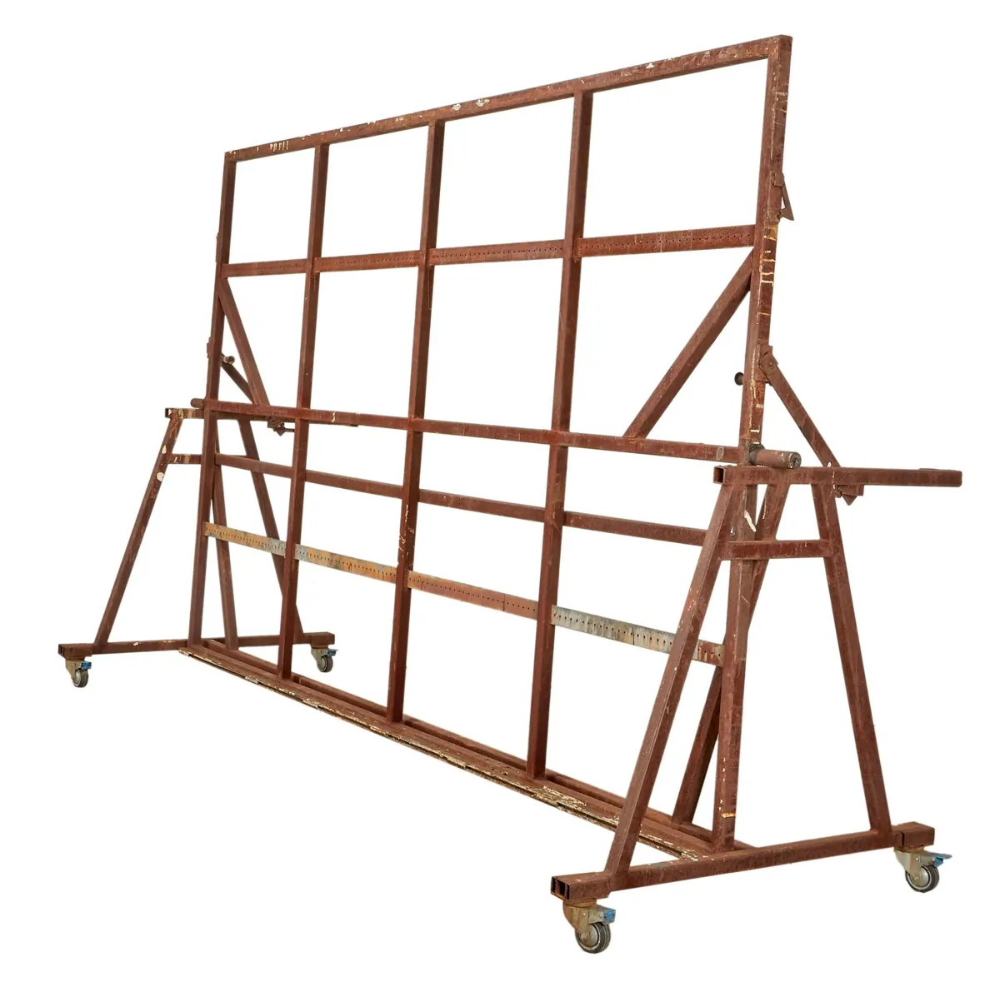
Before film there was painting. Lynch studied at the Pennsylvania Academy of the Fine Arts, and he has described seeing a painting seem to move, which led to the idea of a “moving painting” and to his first film, Six Men Getting Sick (1967). He never stopped painting after it.
The lot
Monumental Steel Easel
A steel easel on wheels from his outdoor art studio, 129.5 inches at its longest. Lynch can be seen using it in the documentary David Lynch: The Art Life (2016).
What it showed
Art sold for 31 times its estimate
The typical lot of art and prints sold for 31 times its estimate, well above the sale’s 18 times.
See the 42 lots of art and printsTime for another cup.
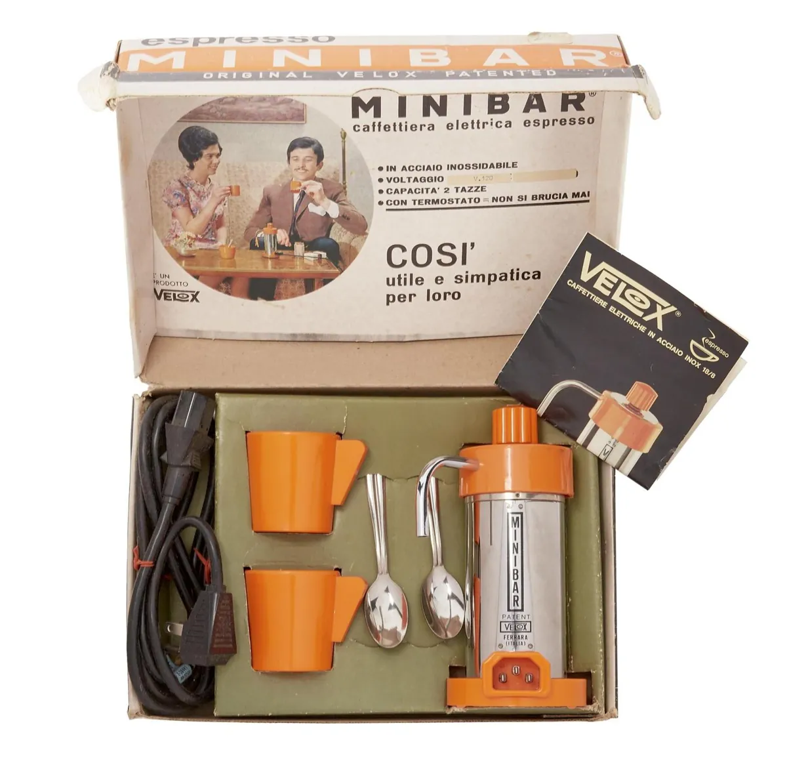
Coffee, second cup
Lynch later sold coffee under his own name. The David Lynch Signature Cup range included organic house and espresso blends. The sale held an older way of making it: an electric espresso maker from around the early 1970s, which sold for $1,950.
Sources
From the canvas to the workbench.
Chapter 4 of 6
Built and furnished
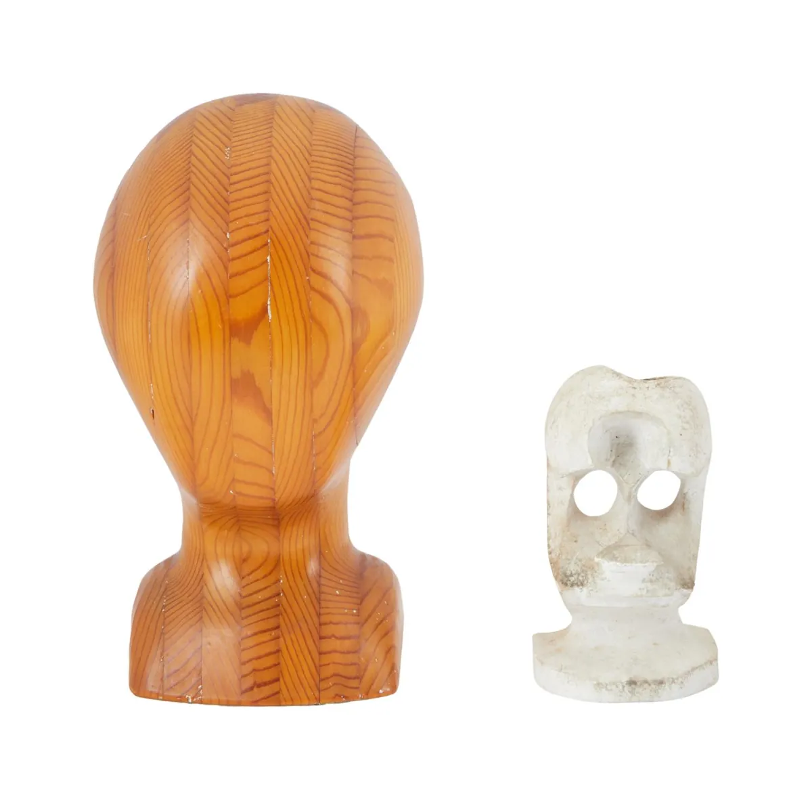
Lynch presented a furniture collection at the Salone del Mobile in Milan in April 1997, and some of his designs appear in Lost Highway. This chapter holds both what he made and what he lived with, and only a few of its 104 lots are described as homemade or handmade, and for the rest the maker is not stated.
The lot
Homemade Figural Head Sculptures
One is plaster, labelled underneath “For David, who made it”. The other is layered wood, labelled “Lynch Brothers, 1971”.
What it showed
Lots marked homemade went further
The 9 lots here with homemade or handmade in the title typically sold for 23 times their estimate, against 10 times for the other 95. It may be that buyers paid for his hand, although 9 lots is a small sample. This chapter also holds the one lot in the sale that sold below its estimate, a Vladimir Kagan sofa.
See the homemade lotsThe workshop was not the only studio.
Chapter 5 of 6
Played
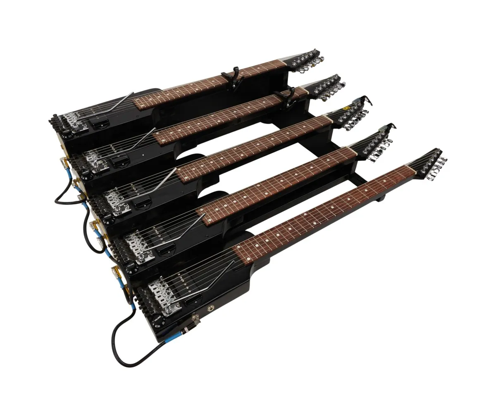
Lynch released Crazy Clown Time in 2011 and The Big Dream in 2013, and he played guitar his own way. “I taught myself and I play upside down and backwards, like a lap guitar,” he said in 2001.
The lot
Danny Ferrington five neck console guitar
Built in 2012 by the luthier Danny Ferrington to Lynch’s own console steel design, with four standard necks and a fifth baritone neck. Julien’s describes it as designed and played by Lynch in his home studio.
What it showed
The guitars made $214,825
The 22 guitar and bass lots made $214,825, and the typical one sold for 15 times its estimate.
See the music and audio lotsSources
Julien’s Auctions, lot 76, quoting Sam Molineaux in Boss Users Group Magazine, 2001.
Between all of this, he read.
Chapter 6 of 6
Read
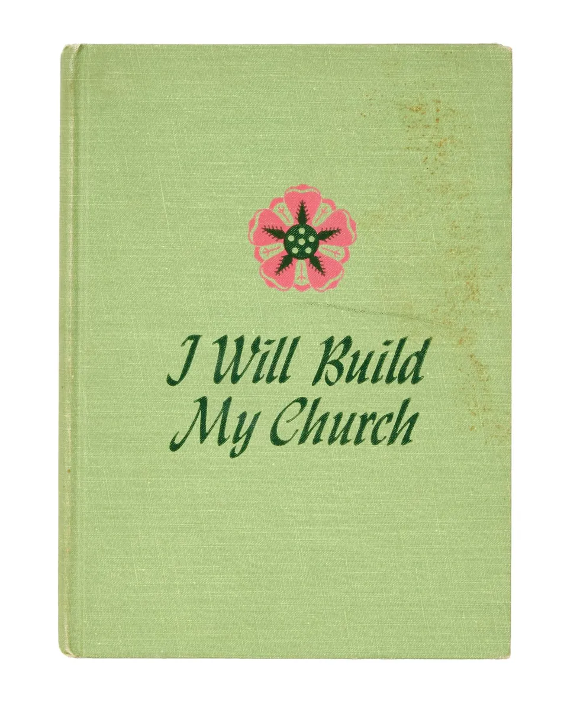
In 1986 Lynch said that one artist who could be his brother was Franz Kafka. Works by Kafka were in the sale, in a lot of paperback fiction, and another lot held a book called Kafka Goes to the Movies. The sale listed 287 books across 38 lots, and the Library lets you browse them.
The lot
Signed copy of “I Will Build My Church”
Amy Lillie’s book, published in Philadelphia in 1950, carries a “Studio David Lynch” stamp. It is signed in pencil “David K. Lynch”, with a phone number and an address written beside the name.
What it showed
Books took the smallest share
Books took 9% of the money, the smallest share of the six chapters. Curiously, the 10 signed or inscribed book lots typically rose less (6 times) than the others (16 times). The reason is not known from this data.
Browse the Library by subjectSources
Julien’s Auctions, lot 123. Far Out, quoting the 1986 David Chute interview.
One last cup.
Coffee, last cup
Three machines, each estimated at $2,000 to $3,000
Each machine is drawn at a size that matches what it sold for.
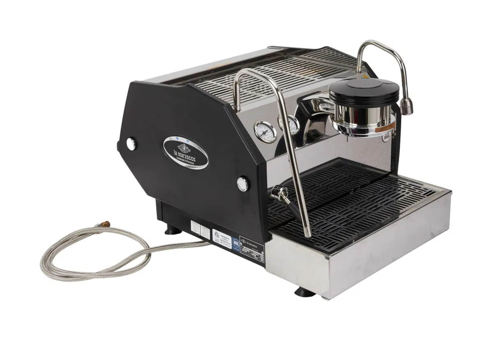
$45,500Lot 3, 18× the estimate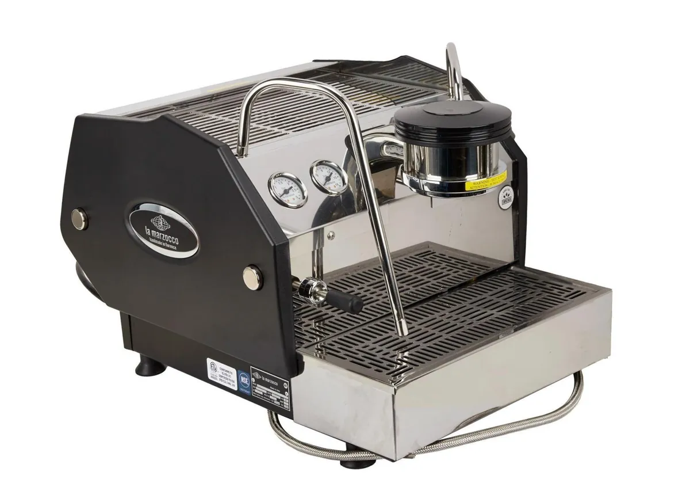
$16,250Lot 269, 6.5× the estimate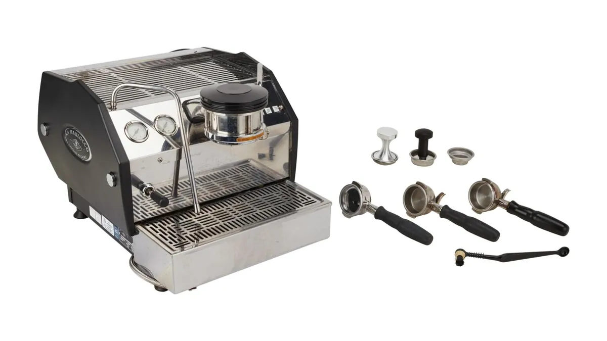
$11,700Lot 420, 4.7× the estimateJulien’s describes all three as used by Lynch daily, with small differences in the accessories.
Your sale result
Place a bid in any chapter and your result appears here.
| Lot | Bid | Sold for |
|---|
The lowest estimates ran furthest
Median multiple, grouped by the midpoint of each lot’s estimate. The top groups hold few lots.
| Estimate midpoint | Lots | Median multiple |
|---|
The wall
All 441 lots in one picture. The typical lot sold for 18 times its estimate. Only one sold for less.